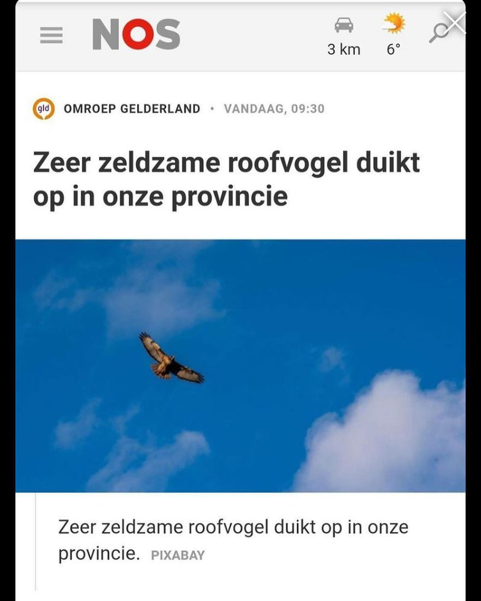
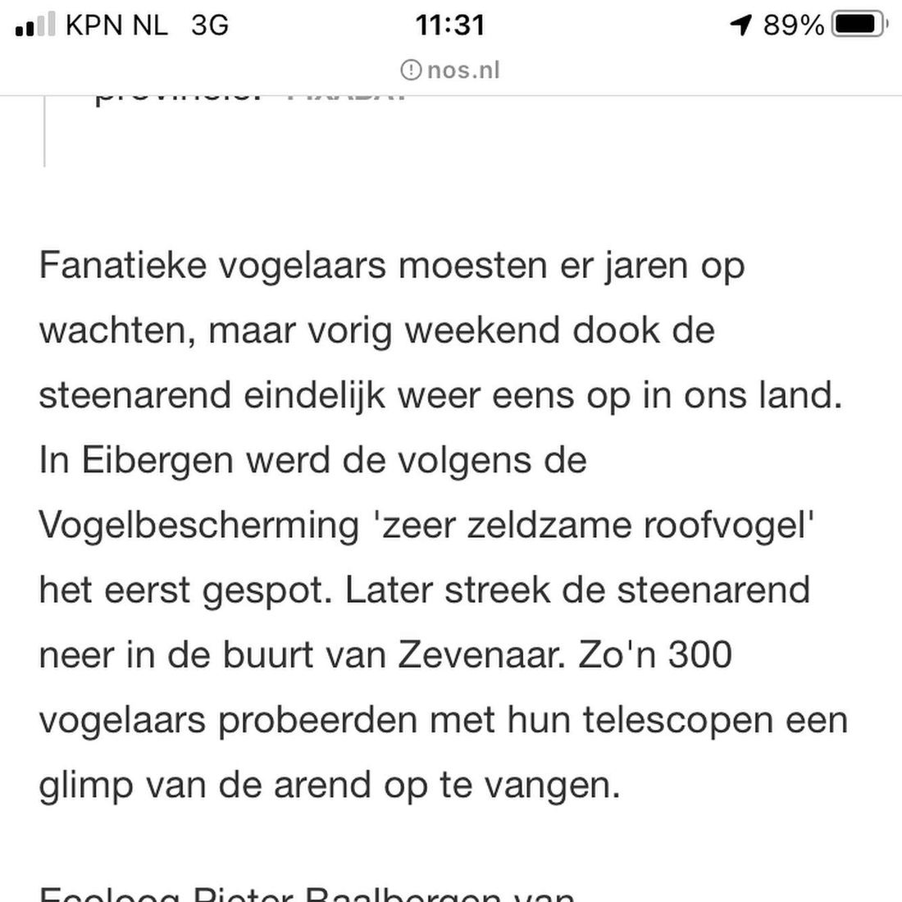

Buizerd, geen steenarend
7 maart 2021 · Omroep Gelderland, NOS
- Op de foto
- Buizerd
- Het ging over
- Steenarend


@omroepgld gaat ook erg goed op deze zondag. Erg goed dat er aandacht wordt gevestigd op de steenarend, maar zet er vervolgens dan geen foto van een Buizerd (of iets anders buitenlands?) bij. De @nos neemt het uiteraard klakkeloos over. Journalistiek 🙌
Met dank aan alle inzenders!